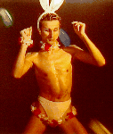

Wankin' in a Winter Wankerland
Run: #869, December 22, 2002
Hare: Basket Boom Boom
Scribe: Raging Queen of Beers
Location: North Smithfield, RI
Weather: 40's, freakin' clear
Present: Summer's Eve Seven Year Bitch, Dr WHO, Async, Swallows My Pride, Bondo Jovi, Tinker
Belle, EverReady S.E.69, KNO, Short Peck, DogMeat, and management: Jake, Ben, and Seamus (No Shamus!).
Visitors: Boston: Puff-N'-Stuff, Shine On HM, Mr. Bean, Cream Whora, Muffalotta, Friar F*ck,
Zena, and the Fat One with (?)Carl, the wonder dog. Lake Effect H3: nhn Just Pete
The Run:
Well, I guess I'm supposed to write this one up. At least according to Async. Why can't that yuppie assign people to write these things up when they actually make the run. I was so toasted that Sunday, there was no way I was makin' it. A six pack of Bud Light, an assortment of flavored Cheetos, and a hot chickie-baby from the Free Radical Scavenger Society was my excuse. Woo Hoo! What a night! Anyways, lucky for me: a little elf called and filled me in. Basket was hare, the trail was no way virgin, there was too much pavement and the beer check sucked, there was some shiggy, and Basket got naked. Ho, Ho, Ho!
My chickie-baby just woke up, rolled over, and said that I got to write more, and make it more interesting. These women are so needy. Oh well, I guess I can stretch this out some. Look at what that knucklehead Dr WHO can do with so much freakin' time on his hands. (Time's not the only thing on his hands, I just bet!) Well, first, those d'erections. Basket musta been taking lessons from me. What a classic! "Turn right at the first driveway after the railroad tracks." But where were the freakin' tracks?! Everyone made it to a factory or something before the river, because Dr WHO and SESYB set up camp there and were mooning all the cars driving by. Talk about panoramic! The wanks from Boston arrived in car pools, complaining of hangovers (like this is any different from the usual!). They joined up with Async and SMP and waited for the hare. He showed up, five minutes late, smelling suspiciously like Bondo's cigar.
Well, late is better than never, and the crowd set off to join Bondo and Shine On at the real starting place by the mythical railroad tracks. Flour was found, no thanks to the hare, and they crossed Rt 5 and went into a cemetery looking for flour or at least significant graves. They found at least one: a former hasher with the epitaph:
Here lies an inveterate Hasher
Who died while he was lost on trail.
He's drinking his beer up in heaven
Which is better than wanking in Glendale!
On the south side of the cemetery, what was there? A freakin' railroad grade! At least it wasn't another power line. The lead pack of Dr WHO, Async and Just Pete were on the embankment heading west like they knew what they were doing. A circle jerk down to the side of the reservoir screwed them up royally. While they were running up and downhill, up and downhill again, the rest of the pack caught and passed them south through someone's yard and then west on Tifft Road. After some confusion on the roads, Puff-n-stuff followed his hangover, looking for a place to puke probably, and crossed a field into the woods. Surprise, surprise, he found true trail and a sand and gravel pit to boot. Most followed. The Fat One had other ideas. The last time he had been in North Smithfield he had had a lovely swim across the dam between the first and second reservoirs. Thinking that a cool dip might get rid of the throbbing in his brain, he decided to make his way there for a winter dip, and hopefully to get to the beer first. It would be a long time before he would get any freakin' beer, I can tell you. (Unless he found that can of Coors Light they had thrown in the whirlpools at the last hash. These RIH3 wankers have no respect for good old American beer.)
The rest of the group were led (if you could call it that) by the unnamed visitor (Just Pete), the drunk (Puff-n-Stuff), the cripple (Async), and the bleeder (Dr WHO). This is the RIH3 for sure! They left the sandpits moving south and came into some shiggy finally. They crossed Pound Hill, and eventually a swamp leading to and crossing Trout Brook. None of those idiots saw the bridge 25 yards upstream, so they all got wet and loved it. Especially Shine On and Swallows My Pride (SMP). Just when things were looking up shiggy-wise, the trail led to some more damn pavement! (It's like the hare wanted them to get some freakin' exercise or something. O.K., Basket! Let's run some 10 K's together! If I'm not there at the start, just go ahead without me! I'll bring the Bud Lights.)
To get back to this stupid story, they went briefly north on Black Hill Road, then east on Jeanne Court to the Beer Check, ‘hidden’ in a vacant lot on the street. The beer was right there, out in the open in a bright yellow sack. And they still couldn’t find it for about five minutes! A plastic container inside the sack was half-full of cloudy brown liquid. The hare said that his container was specially designed for beer, but one look at it and you could tell what it really was. The storage tank from a chemical toilet, that's what! And not very well cleaned, either. Try to serve Bud Light in that thing and see what happens! But the stuff that Basket uses, no one (except a chemist like me) can tell if it had been mixed with questionable organic excretions anyways!
Being hashers, they drank on. They chatted away in small groups. They ignored the strange looks from the neighbors who were quickly gathering up their children and bringing them inside. Async challenged Muffalotta, SMP and Shine On to see if his roots needed a touch-up from L'Oreal. This was just a pitiful excuse to get a scalp rub from the girlies. Someone should tell him that this is NOT what 'head' is! We in the chemistry business sure know, I can tell you! After a while, everyone except for the Fat One was there. Conversations died out. (This would never happen if the hare served proper beer. Once you add your kraeusen into an aging tank lined with real beechwood chips, you’ll never look back. There’s a party in every can.) In the quiet, you could hear the wind in the trees, the distant cars on Rt 146, the drippings from Dr WHO's bleeding legs, and the pounding veins in Cream Whora's head. But no whistles, or 'On On!' cries were heard. The Fat One was missing! Who cared? The hare reluctantly decided to stay back while the rest went on.
Trail led on more roads for a while. (Oh, Basket! I think I’m ready for the Downtown 5K now. I think I could break 25 minutes at last! Let’s all go!) Finally they turned onto the Providence Pike where Just Pete and Async just knew the trail just turned left. But just left was uphill, and Dr WHO was just too lazy, so he just stumbled onto the true trail heading just south. It then just turned east into the woods on a network of just fiberoptic cable paths. Unfortunately for him and all of them, these paths led up the massive flanks of Woonsocket Hill. I sure am glad I just stayed in Groton! They meandered around east then north through well-marked trails, puffing like a bunch of asthmatics at hay-harvest time, crossed Pound Hill road again, and moved north.
Led by Just Pete and Puff-n-Stuff, they came downhill along a trickle of a streambed. They scoffed vocally. But it turned out that this led to a most excellent swamp. Just Pete charged ahead and practically lost his shoes, showing Puff-n-Stuff and WHO how to get around the worst of the muck. Once out of the swamp onto the Industrial Road, the leaders paused to hear how the rest of the pack dealt with the shiggy. Bondo started to give the hare his first favorable ratings of the hash. Good stuff. Async had borrowed an outfit from WIPOS and was hermetically sealed. No comment. Cream Whora, Muffalotta and Friar F*ck felt their hangovers going away as the blood was diverted from their heads to their feet and other wet parts. Why were they so quiet? But when SMP and Shine On went in, they sank right up to their hootchie-kootchies. Their screams and squeals were heard for miles. (In fact, the Fat One who was by this time close to Worcester, MA, heard the sounds and turned back, or at least back into the right state.) But all eventually crossed the shiggy (which really wasn't as good as I made it sound; it's just that I'm so charitable, filled with the Xmas spirit and a few Bud Lights). They climbed through some driveways and went northwest on Comstock Road, back down to the railroad grade and the cars.
After cleaning off, they agreed to go back to the hare's house to circle and they made their ways there separately. But the Fat one was still missing so they decided to send the hare back out after him and eat dinner before the circle. A fine dinner was had, courtesy of Dogmeat and no thanks to the lazy hare. He had told her that he was too busy making the perfect trail. Oh right! I think he's actually training for the Boston Marathon or something, the wank! Why don't you help your wife out sometimes when you invite all these wankers to your house for dinner? Toss a salad! Make some macaroni! Would it kill you to get some Bud Light so's that people could have a decent beer when they come to your place? Never mind! I'm sorry, I get carried away.
Two or three hours later, the hare finally returned with the wanker, and the circle was joined. Ratings for the run were sure better than the freakin' hare deserved. This could only be explained by the lucky circumstances of: a few good swamps, loss of a hasher, multiple bimbos, (increased at this point by the addition of EverReady, Dogmeat and Tinkerbelle), and the holiday season. +0.69 was given, and the hare was punished. Hashit was a difficult choice, because the RIH3 likes to give away its hashit to people who never return. They couldn't give it to the Fat One, because it might encourage him to return. Bondo offered to take a crap in the hand of whoever got the award as a new, disposable and biodegradable form of hashit. Unfortunately, when EverReady received the award, he decided not to show off his shortcomings in front of the children. Speaking of children, since when did the RIH3 become a daycare hash? I mean EverReady's kids, KNO's kids, Basket's kids (Short Peck, you should keep that toilet plunger forever. It makes you look so cool!), and Mr. Bean's little "Hung Like A Bean ". Oh well, I guess it's OK, since at least it kept Basket clothed for the evening. Next, they gave that lame Dr WHO a mug for his 100th run. Yeah, right! 100th pint of blood loss, maybe, but he sure doesn't look like he's run 100 times in his life! Anyways, the circle soon ended.
By now, everyone was anxious to get his or her presents, so they moved inside and Basket the Red-Nosed wanker appointed SESYB as Santa, Dr WHO as chief elf, and himself as that little fairy that gives out the Xmas gifts. You can look at the pictures on the website to see the gifts, except the most popular which we'll just call the "sticky magazine" in case any of those kids are reading this. (Hey kids, howzabout a chemistry joke? How do you figure out how many molecules there are in a Guaca-mole? Give up? You have to use Avocado's number! Get it?) Dr WHO got the best, a nearly full 12 pack of Genny Cream Light. Obviously, someone else snapped that one up quickly. You can see Bondo drinking a can from the Titty-cup. I bet he changes his brewing methods now that he's tasted the real thing! Maybe JBS had better watch out!
Well, I got to get back to work. I'm working for Pfizer on a new version of our best seller, Viagra, which will even work on Basket. It's a soft market, with limp returns, but I'm up to the long and hard task, you can bet. Happy holidays to all, and see you at the Bud Light tap down at Mark's (Mike's, Mork's) in West Greenwich.
On On

The Raging Queen of Beers